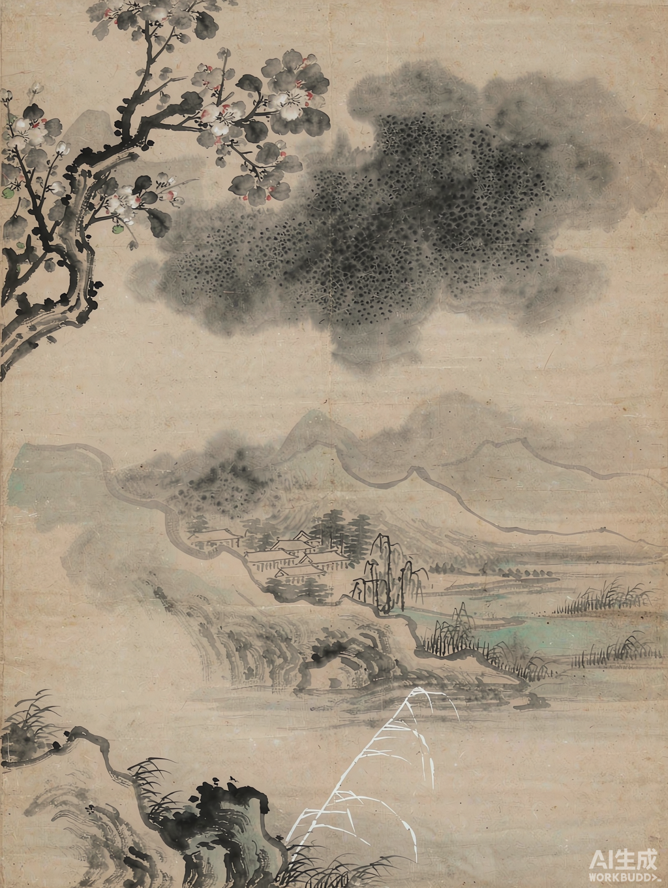
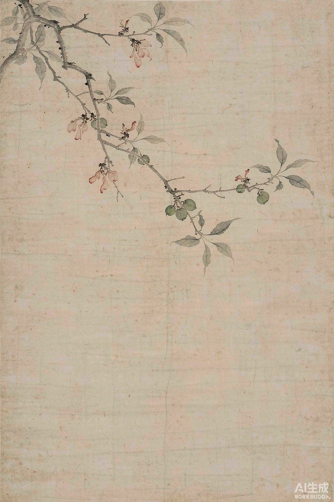
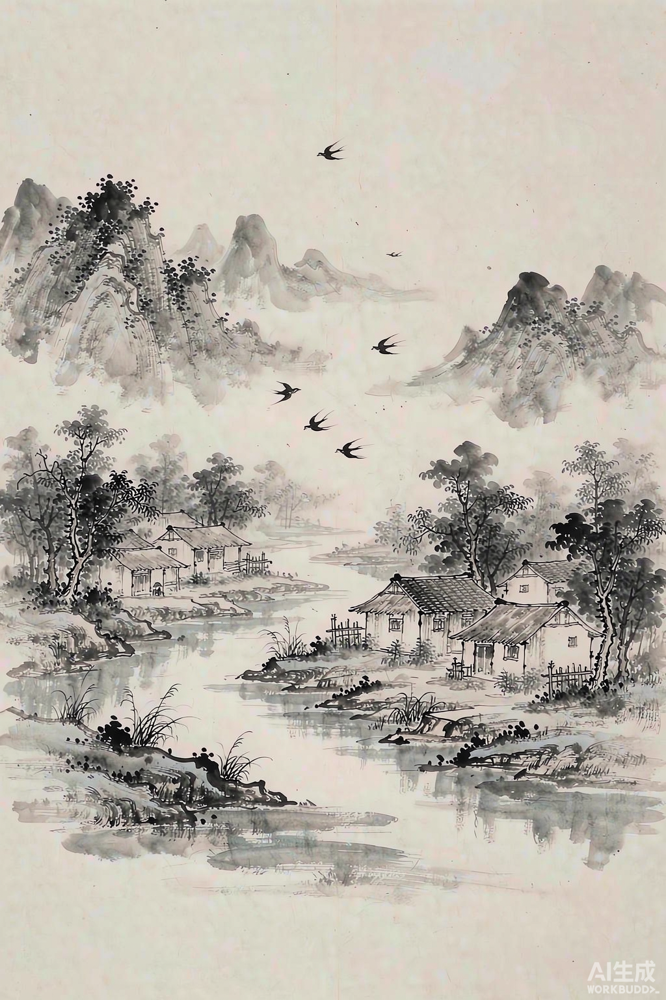
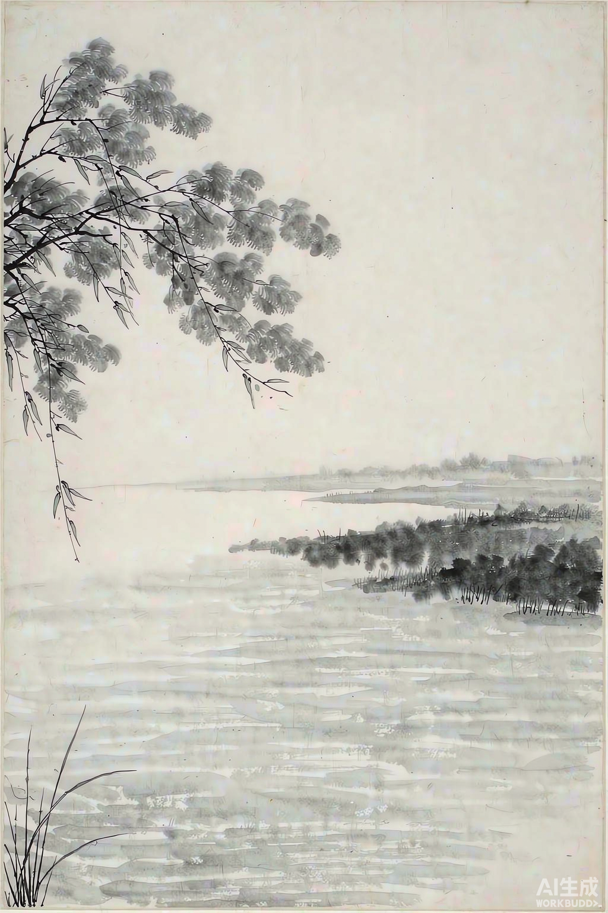
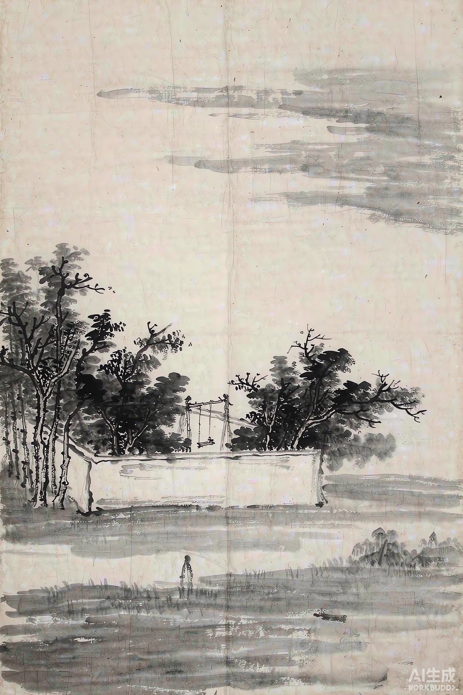
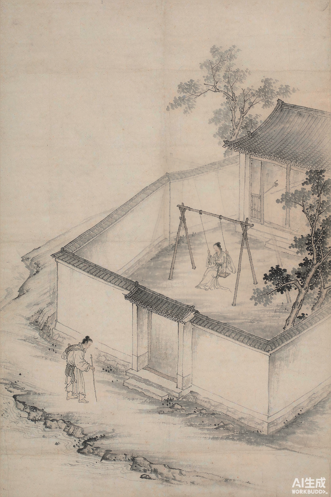
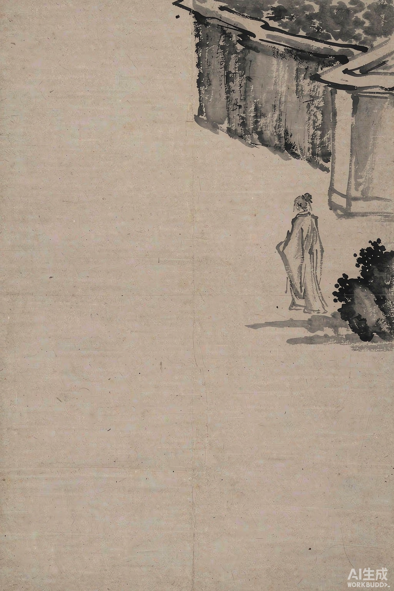

全 词
花褪残红青杏小。燕子飞时，绿水人家绕。
枝上柳绵吹又少，天涯何处无芳草。
墙里秋千墙外道。墙外行人，墙里佳人笑。
笑渐不闻声渐悄，多情却被无情恼。
暮春时节，花褪残红，青杏初结——苏轼在这首婉约小词里写尽了「多情却被无情恼」的微妙心事。一分惜春，一分旷达，三分说不清道不明的怅惘。

花褪残红青杏小。燕子飞时，绿水人家绕。
枝上柳绵吹又少，天涯何处无芳草。
墙里秋千墙外道。墙外行人，墙里佳人笑。
笑渐不闻声渐悄，多情却被无情恼。
词从枝头一瞥开始：花退了，杏来了，春天正在悄悄交班。

画面一枝斜出，红花已谢得只剩零星，青涩的小杏悄悄探头。花退杏进，正是暮春最微妙的时刻——繁华落尽，果实初生。苏轼不写伤春的哀嚎，只冷静记录这场交接，淡然里藏着一丝惋惜。
褪：凋谢、褪色；残红：落花；青杏：初结的小杏，色青未熟。句意——花儿凋残，红色褪去，枝头只剩小小的青杏。
视线从枝头拉远，一幅安稳圆足的江南暮春图。

燕子掠过天空，一湾绿水环绕着村舍人家。动静相衬——燕子是流动的生气，人家是安顿的烟火。这幅江南暮春图安宁圆足，恰为下文的怅惘埋下反衬的底色。
绕：环绕、围绕。句意——燕子飞舞的时节，一湾绿水环绕着几户人家。
上句惜春，下句忽而宕开——这是全词最著名的转折。

柳絮被风吹得越来越少，春天真的要走了；可抬眼望，天涯尽头哪一处没有青青芳草？上句收，惜眼前之春；下句放，见天地之阔。一收一放之间，是苏轼式的自我宽解——失去的固然可惜，生机却处处都在。
柳绵：柳絮；天涯：天边，极远之处；芳草：香草，常喻美好的事物与希望。句意——枝上柳絮愈吹愈少，但天边何处没有芳草呢。
镜头一转，从旷野收进人间：一道墙，隔出两个世界。

一道白墙，墙里是深宅庭院、秋千闲荡的青春，墙外是行人必经的道路。墙是实际的建筑，更是人与人间「遇与不遇」的隐喻——只一墙之隔，却两不相见。画面简净，墙内墙外各自成境。
秋千：悬索荡板的游戏器械，古时多置庭院，为女子春日嬉戏之具。句意——围墙里有人荡着秋千，围墙外是行人走的道路。
一场毫无预谋的相遇：笑声那样近，人却那样远。

墙里，佳人荡着秋千，笑声清脆；墙外，行人拄杖赶路，未曾抬头。墙太高，挡住了视线——他看不见她，她也不知道墙外有人经过。可笑声不认得墙，径自越了过去。一个无情地笑，一个多情地恼，这场相遇与错过，全在这道墙的两边。
行人：过路之人，亦暗指漂泊在外的苏轼自己；佳人：美好的女子。句意——墙外的行人驻足倾听，墙里是佳人的欢笑。
全词收束于此：不解释，不排解，把那点怅惘留在空白里。

笑声渐渐远去、低下去，终于听不见了；墙外行人兀自立在寂静里，大块留白压出满纸空落。多情的是他，浑然不觉的是墙里人——这一恼，恼得无理又真实。画面愈静，心事愈深。
多情：指墙外行人（自指）；无情：指墙内佳人（不知有人徘徊）；恼：撩拨、引起烦恼。句意——笑声渐远渐悄，我这片多情，却被无情的人儿惹得满心烦恼。
这首词的每个意象都带着「将尽」与「将生」的双重意味。
| 意象 | 出处 | 象征 |
|---|---|---|
| 残红 / 青杏 | 花褪残红青杏小 | 春光将尽、生机暗换 |
| 燕子 | 燕子飞时 | 时序流转、人间生气 |
| 绿水人家 | 绿水人家绕 | 安宁圆足的生活图景 |
| 柳绵 | 枝上柳绵吹又少 | 留不住的春光 |
| 芳草 | 天涯何处无芳草 | 处处可寻的希望与慰藉 |
| 墙 | 墙里秋千墙外道 | 人我之间的阻隔 |
| 佳人笑 | 墙里佳人笑 | 可望而不可即的美好 |